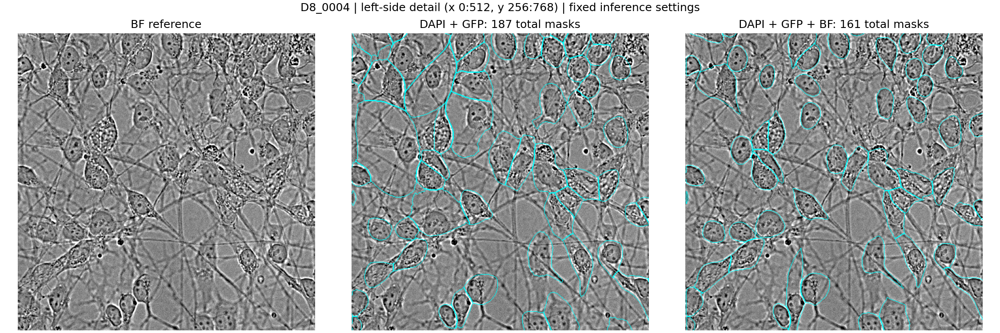
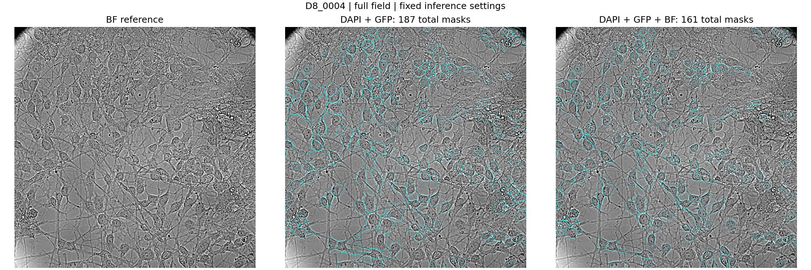
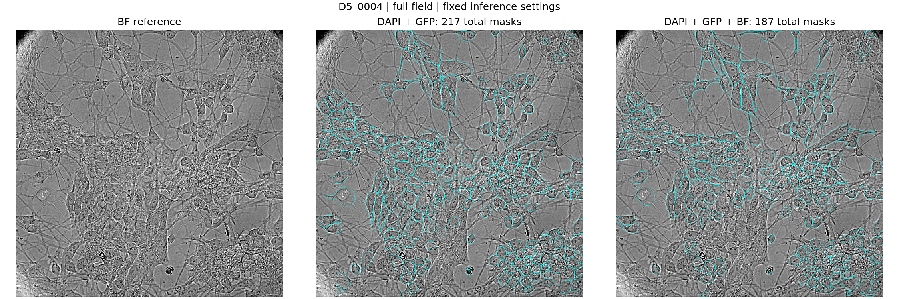
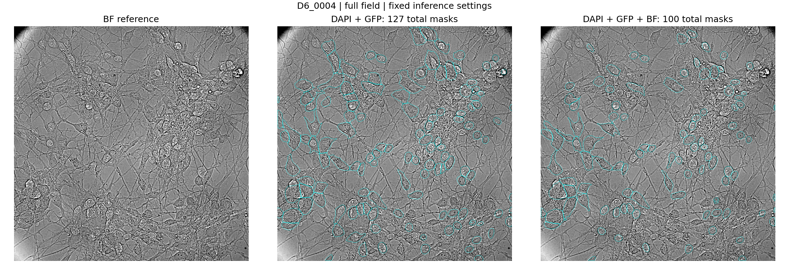
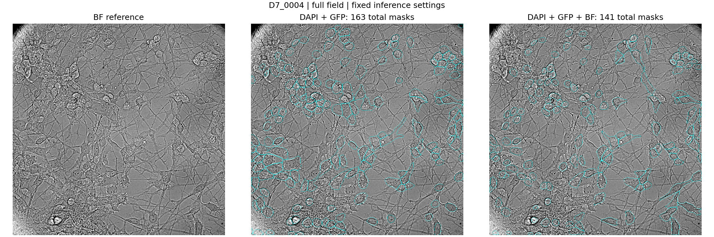
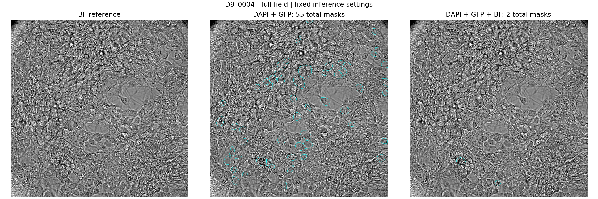

Controlled comparison using pretrained cpsam_v2: DAPI + GFP versus DAPI + GFP + BF. Both use local normalization 128 px, cellprob threshold 0, flow threshold 0.6, min_size 15, and no diameter rescaling. Five full 1024 × 1024 fields were tested. No training, registration correction, or weighted blending was performed. BF is an input to the new run, so agreement with BF is not independent validation.
Mask coverage is the fraction of pixels assigned to any object. Reduced coverage alone does not establish improved segmentation: it can represent tighter boundaries or missing cells. Counts are not accuracy measurements. D9 has weak GFP signal.
Visual review of the left D8 detail shows several broad fluorescence-derived regions becoming tighter around BF-visible bodies. The tradeoff is reduced detection: in the central D8 crop, 51 of 61 GFP-only nuclear candidates overlap a two-channel mask by at least 50%, versus 47 with BF added. Those automatic nuclear masks are a consistency check, not ground truth, and that central crop differs from the left-half coverage region.
| Field | 2-channel count | 3-channel count | 2-channel coverage | 3-channel coverage |
|---|---|---|---|---|
| D8_0004 | 187 | 161 | 30.6% | 19.5% |
| D5_0004 | 217 | 187 | 34.5% | 28.2% |
| D6_0004 | 127 | 100 | 21.6% | 12.9% |
| D7_0004 | 163 | 141 | 24.9% | 17.2% |
| D9_0004 | 55 | 2 | 7.0% | 0.2% |
Coverage in the full left half (x 0:512, all y): 40.8% without BF, 25.5% with BF. The close-up below shows x 0:512, y 256:768.


Native-resolution BF overlay · Three-channel integer masks

Native-resolution BF overlay · Three-channel integer masks

Native-resolution BF overlay · Three-channel integer masks

Native-resolution BF overlay · Three-channel integer masks

Native-resolution BF overlay · Three-channel integer masks
Label 0 is background. Object IDs are local to each file and do not match across runs. Inline images are compressed and contours simplified; use native-resolution PNGs and TIFFs for precise boundaries.